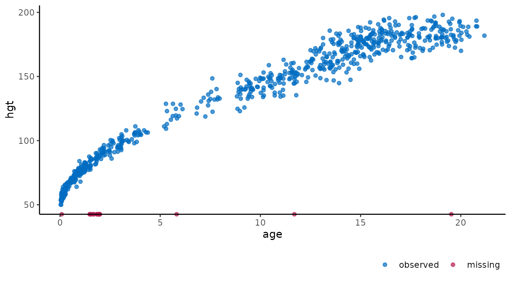
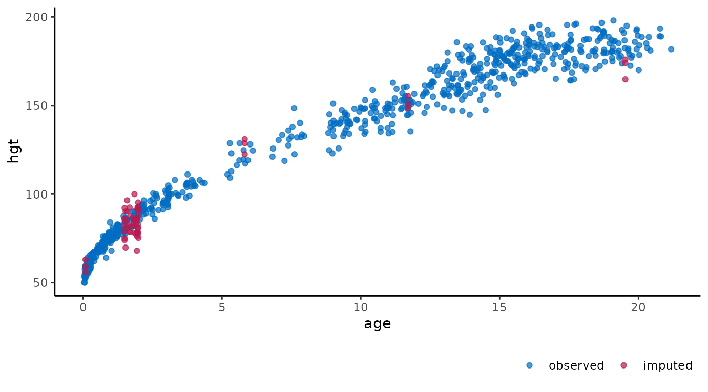
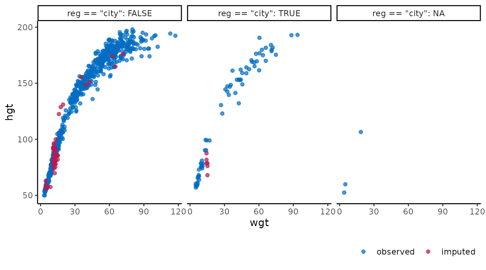
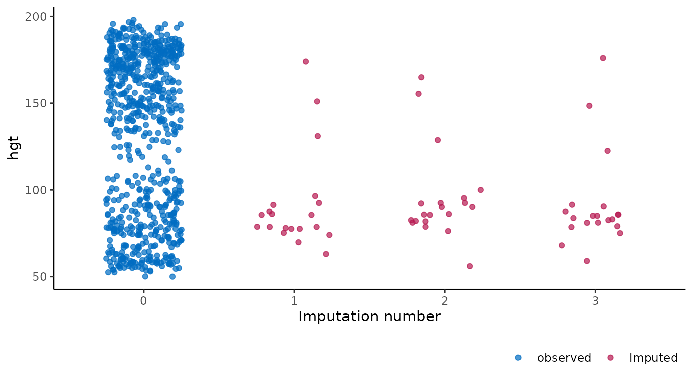
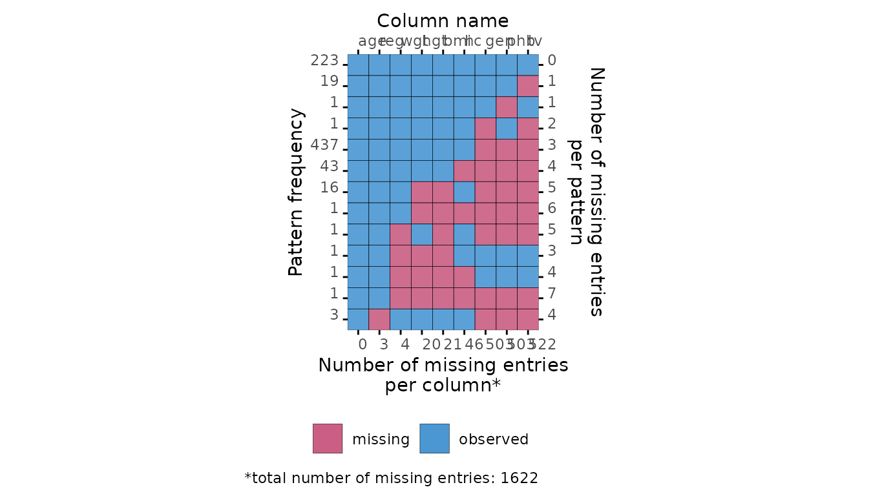
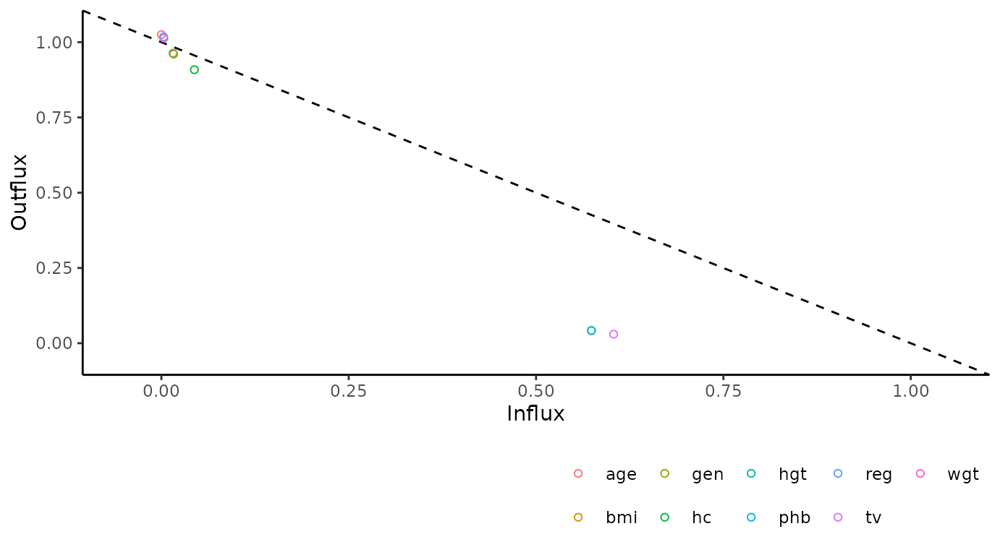

The ggmice package
The ggmice package provides visualizations for the evaluation of incomplete data, mice imputation model arguments, and multiply imputed data sets (mice::mids objects). The functions in ggmice adhere to the ‘grammar of graphics’ philosophy, popularized by the ggplot2 package. With that, ggmice enhances imputation workflows and provides plotting objects that are easily extended and manipulated by each individual ‘imputer’.
This vignette gives an overview of the different plotting function in ggmice. The core function, ggmice(), is a ggplot2::ggplot() wrapper function which handles missing and imputed values. In this vignette, you’ll learn how to create and interpret ggmice visualizations.
Experienced mice users may already be familiar with the lattice style plotting functions in mice. These ‘old friends’ such as mice::bwplot() can be re-created with the ggmice() function, see the Old friends vignette for advice.
Set-up
You can install the latest ggmice release from CRAN with:
install.packages("ggmice")The development version of the ggmice package can be installed from GitHub with:
# install.packages("devtools")
devtools::install_github("amices/ggmice")After installing ggmice, you can load the package into your R workspace. It is highly recommended to load the mice and ggplot2 packages as well. This vignette assumes that all three packages are loaded:
We will use the mice::boys data for illustrations. This is an incomplete dataset (\(n = 748\)) with cross-sectional data on \(9\) growth-related variables. We load the incomplete data with:
dat <- boysFor the purpose of this vignette, we impute all incomplete variables \(m = 3\) times with predictive mean matching as imputation method. Imputations are generated with:
imp <- mice(dat, m = 3, method = "pmm")We now have the necessary packages, an incomplete dataset (dat), and a mice::mids object (imp) loaded in our workspace.
The ggmice() function
The core function in the ggmice package is ggmice(). This function mimics how the ggplot2 function ggplot() works: both take a data argument and a mapping argument, and will return an object of class ggplot. Using ggmice() looks equivalent to a ggplot() call:
The main difference between the two functions is that ggmice() is actually a wrapper around ggplot(), including some pre-processing steps for incomplete and imputed data. Because of the internal processing in ggmice(), the mapping argument is required for each ggmice() call. This is in contrast to the aesthetic mapping in ggplot(), which may also be provided in subsequent plotting layers. After creating a ggplot object, any desired plotting layers may be added (e.g., with the family of ggplot2::geom_* functions), or adjusted (e.g., with the ggplot2::labs() function). This makes ggmice() a versatile plotting function for incomplete and/or imputed data.
The object supplied to the data argument in ggmice() should be an incomplete dataset of class data.frame, or an imputation object of class mice::mids. Depending on which one of these is provided, the resulting visualization will either differentiate between observed and missing data, or between observed and imputed data. By convention, observed data is plotted in blue and missing or imputed data is plotted in red.
The mapping argument in ggmice() cannot be empty. An x or y mapping (or both) has to be supplied for ggmice() to function. This aesthetic mapping can be provided with the ggplot2 function aes() (or equivalents). Other mapping may be provided too, except for colour, which is already used to display observed versus missing or imputed data.
Incomplete data
If the object supplied to the data argument in ggmice() is a data.frame, the visualization will contain observed data in blue and missing data in red. Since missing data points are by definition unobserved, the values themselves cannot be plotted. What we can plot are sets of variable pairs. Any missing values on one variable can be displayed on top of the axis of the other. This provides a visual cue that the missing data is distinct from the observed values, but still displays the observed value of the other variable.
For example, the variable age is completely observed, while there are some missing entries for bmi. We can create a scatter plot of these two variables with:
ggmice(dat, aes(age, bmi)) +
geom_point()
The age of cases with missing bmi are plotted on top of the horizontal axis. This is in contrast to a regular ggplot() call with the same arguments, which would leave out all cases with missing bmi. So, with ggmice() we loose less information, and may even gain valuable insight into the missingness in the data.
Another example of ggmice() in action on incomplete data is when one of the variables is categorical. The incomplete continuous variable bmi is plotted against the incomplete categorical variable reg with:
ggmice(dat, aes(reg, bmi)) +
geom_point()
Again, missing values are plotted on top of the axes. Cases with observed bmi and missing reg are plotted on top of the vertical axis. Cases with observed reg and missing bmi are plotted on top of the horizontal axis. There are no cases were neither is observed, but otherwise these would be plotted on the intersection of the two axes.
The ‘grammar of graphics’ makes it easy to adjust the plots programmatically. For example, we could be interested in the differences in growth data between the city and other regions. Add facets based on a clustering variable with:
ggmice(dat, aes(wgt, hgt)) +
geom_point() +
facet_wrap(~ reg == "city", labeller = label_both)
Or, alternatively, we could convert the plotted values of the variable hgt from centimeters to inches and the variable wgt from kilograms to pounds with:
ggmice(dat, aes(wgt * 2.20, hgt / 2.54)) +
geom_point() +
labs(x = "Weight (lbs)", y = "Height (in)")
Imputed data
If the data argument in ggmice() is provided a mice::mids object, the resulting plot will contain observed data in blue and imputed data in red. There are many possible visualizations for imputed data, four of which are explicitly defined in the mice package. Each of these can be re-created with the ggmice() function (see the Old friends vignette). But ggmice() can do even more.
For example, we could create the same scatter plots as the ones above, but now on the imputed data:
ggmice(imp, aes(age, bmi)) +
geom_point()
ggmice(imp, aes(reg, bmi)) +
geom_point()
ggmice(imp, aes(wgt, hgt)) +
geom_point() +
facet_wrap(~ reg == "city", labeller = label_both)
ggmice(imp, aes(wgt * 2.20, hgt / 2.54)) +
geom_point() +
labs(x = "Weight (lbs)", y = "Height (in)")These figures show the observed data points once in blue, plus three imputed values in red for each missing entry.
It is also possible to use the imputation number as mapping variable in the plot. For example, we can create a stripplot of observed and imputed data with the imputation number .imp on the horizontal axis:
ggmice(imp, aes(x = .imp, y = bmi)) +
geom_jitter(height = 0, width = 0.25) +
labs(x = "Imputation number")
A major advantage of ggmice() over the equivalent function mice::stripplot() is that ggmice allows us to add subsequent plotting layes, such as a boxplot overlay:
ggmice(imp, aes(x = .imp, y = bmi)) +
geom_jitter(height = 0, width = 0.25) +
geom_boxplot(width = 0.5, size = 1, alpha = 0.75, outlier.shape = NA) +
labs(x = "Imputation number")
To re-create any mice plot with ggmice, see the Old friends vignette.
Other functions
The ggmice package contains some additional plotting functions to explore incomplete data and evaluate convergence of the imputation algorithm. These are presented in the order of a typical imputation workflow, where the missingness is first investigated using a missing data pattern and influx-outflux plot, then imputation models are built based on relations between variables, and finally the imputations are inspected visually to check for non-convergence.
Missing data pattern
The plot_pattern() function displays the missing data pattern in an incomplete dataset. The argument data (the incomplete dataset) is required, the argument square is optional and determines whether the missing data pattern has square or rectangular tiles, and the optional argument rotate changes the angle of the variable names 90 degrees if requested.
# create missing data pattern plot
plot_pattern(dat)
# specify optional arguments
plot_pattern(dat, square = TRUE, rotate = TRUE)
Influx and outflux
The plot_flux() function produces an influx-outflux plot. The influx of a variable quantifies how well its missing data connect to the observed data on other variables. The outflux of a variable quantifies how well its observed data connect to the missing data on other variables. In general, higher influx and outflux values are preferred when building imputation models. The plotting function requires an incomplete dataset (argument data), and takes optional arguments to adjust the legend and axis labels.
# create influx-outflux plot
plot_flux(dat)
# specify optional arguments
plot_flux(
dat,
label = FALSE,
caption = FALSE
)
Correlations between variables
The function plot_corr() can be used to investigate relations between variables, for the development of imputation models. Only one of the arguments (data, the incomplete dataset) is required, all other arguments are optional.
# create correlation plot
plot_corr(dat)
# specify optional arguments
plot_corr(
dat,
vrb = c("hgt", "wgt", "bmi"),
label = TRUE,
square = FALSE,
diagonal = TRUE
)
Predictor matrix
The function plot_pred() displays mice predictor matrices. A predictor matrix is typically created using mice::make.predictorMatrix(), mice::quickpred(), or by using the default in mice::mice() and extracting the predictorMatrix from the resulting mids object. The plot_pred() function requires a predictor matrix (the data argument), but other arguments can be provided too.

# specify optional arguments
plot_pred(
pred,
label = FALSE,
square = FALSE
)
Algorithmic convergence
The function plot_trace() plots the trace lines of the MICE algorithm for convergence evaluation. The only required argument is data (to supply a mice::mids object). The optional argument vrb defaults to "all", which would display traceplots for all variables.
# create traceplot for one variable
plot_trace(imp, "bmi")
This is the end of the vignette. This document was generated using:
sessionInfo()
#> R version 4.2.0 (2022-04-22)
#> Platform: x86_64-pc-linux-gnu (64-bit)
#> Running under: Ubuntu 20.04.4 LTS
#>
#> Matrix products: default
#> BLAS: /usr/lib/x86_64-linux-gnu/blas/libblas.so.3.9.0
#> LAPACK: /usr/lib/x86_64-linux-gnu/lapack/liblapack.so.3.9.0
#>
#> locale:
#> [1] LC_CTYPE=C.UTF-8 LC_NUMERIC=C LC_TIME=C.UTF-8
#> [4] LC_COLLATE=C.UTF-8 LC_MONETARY=C.UTF-8 LC_MESSAGES=C.UTF-8
#> [7] LC_PAPER=C.UTF-8 LC_NAME=C LC_ADDRESS=C
#> [10] LC_TELEPHONE=C LC_MEASUREMENT=C.UTF-8 LC_IDENTIFICATION=C
#>
#> attached base packages:
#> [1] stats graphics grDevices utils datasets methods base
#>
#> other attached packages:
#> [1] ggmice_0.0.1.9000 ggplot2_3.3.6 mice_3.14.0
#>
#> loaded via a namespace (and not attached):
#> [1] tidyselect_1.1.2 xfun_0.30 bslib_0.3.1 purrr_0.3.4
#> [5] lattice_0.20-45 colorspace_2.0-3 vctrs_0.4.1 generics_0.1.2
#> [9] htmltools_0.5.2 yaml_2.3.5 utf8_1.2.2 rlang_1.0.2
#> [13] pkgdown_2.0.3 jquerylib_0.1.4 pillar_1.7.0 glue_1.6.2
#> [17] withr_2.5.0 lifecycle_1.0.1 stringr_1.4.0 munsell_0.5.0
#> [21] gtable_0.3.0 ragg_1.2.2 memoise_2.0.1 evaluate_0.15
#> [25] labeling_0.4.2 knitr_1.39 fastmap_1.1.0 fansi_1.0.3
#> [29] highr_0.9 broom_0.8.0 Rcpp_1.0.8.3 backports_1.4.1
#> [33] scales_1.2.0 cachem_1.0.6 desc_1.4.1 jsonlite_1.8.0
#> [37] farver_2.1.0 systemfonts_1.0.4 fs_1.5.2 textshaping_0.3.6
#> [41] digest_0.6.29 stringi_1.7.6 dplyr_1.0.9 rprojroot_2.0.3
#> [45] grid_4.2.0 cli_3.3.0 tools_4.2.0 magrittr_2.0.3
#> [49] sass_0.4.1 tibble_3.1.7 crayon_1.5.1 tidyr_1.2.0
#> [53] pkgconfig_2.0.3 ellipsis_0.3.2 rmarkdown_2.14 R6_2.5.1
#> [57] compiler_4.2.0